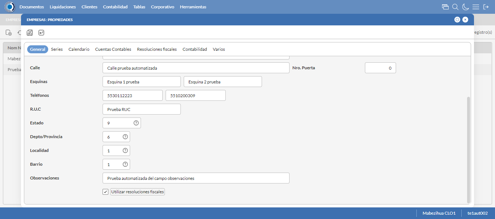
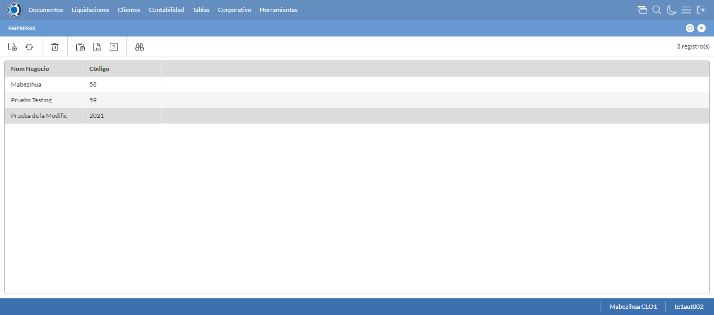

Desarrollado por : Area de Testing PWST
Fecha y hora de inicio : 2023-01-04 13:45:15
Duracion : 0:01:34.571574
Resultado : Total 8，Correctos 6 ，Errores 2 ，Taza de resultado 75.00%
Resumen 75.00% Errores 2 Fallidos 0 Correctos 6 Test realizados 8
| Caso de Prueba | Total | Correctos | Fallido | Error | Detalles | Captura del error |
| Empresas.Test: Escenario 1 de Empresas | 8 | 6 | 0 | 2 | Detalles | |
test |
ft1_1: 2023-01-04 13:45:16,151 - root - INFO - Se abre el chrome
2023-01-04 13:45:16,934 - root - INFO - Entra a la URL
2023-01-04 13:45:17,114 - root - INFO - Maximiza la pantalla
Traceback (most recent call last):
File "C:\Users\gerar\AppData\Local\Programs\Python\Python311\Lib\site-packages\selenium\webdriver\remote\switch_to.py", line 88, in frame
frame_reference = self._driver.find_element(By.ID, frame_reference)
^^^^^^^^^^^^^^^^^^^^^^^^^^^^^^^^^^^^^^^^^^^^^^^^^
File "C:\Users\gerar\AppData\Local\Programs\Python\Python311\Lib\site-packages\selenium\webdriver\remote\webdriver.py", line 861, in find_element
return self.execute(Command.FIND_ELEMENT, {"using": by, "value": value})["value"]
^^^^^^^^^^^^^^^^^^^^^^^^^^^^^^^^^^^^^^^^^^^^^^^^^^^^^^^^^^^^^^^^^
File "C:\Users\gerar\AppData\Local\Programs\Python\Python311\Lib\site-packages\selenium\webdriver\remote\webdriver.py", line 444, in execute
self.error_handler.check_response(response)
File "C:\Users\gerar\AppData\Local\Programs\Python\Python311\Lib\site-packages\selenium\webdriver\remote\errorhandler.py", line 249, in check_response
raise exception_class(message, screen, stacktrace)
selenium.common.exceptions.NoSuchElementException: Message: no such element: Unable to locate element: {"method":"css selector","selector":"[id="mainFrame"]"}
(Session info: chrome=108.0.5359.125)
Stacktrace:
Backtrace:
(No symbol) [0x0063F243]
(No symbol) [0x005C7FD1]
(No symbol) [0x004BD04D]
(No symbol) [0x004EC0B0]
(No symbol) [0x004EC22B]
(No symbol) [0x0051E612]
(No symbol) [0x005085D4]
(No symbol) [0x0051C9EB]
(No symbol) [0x00508386]
(No symbol) [0x004E163C]
(No symbol) [0x004E269D]
GetHandleVerifier [0x008D9A22+2655074]
GetHandleVerifier [0x008CCA24+2601828]
GetHandleVerifier [0x006E8C0A+619850]
GetHandleVerifier [0x006E7830+614768]
(No symbol) [0x005D05FC]
(No symbol) [0x005D5968]
(No symbol) [0x005D5A55]
(No symbol) [0x005E051B]
BaseThreadInitThunk [0x76347D69+25]
RtlInitializeExceptionChain [0x7731BB9B+107]
RtlClearBits [0x7731BB1F+191]
During handling of the above exception, another exception occurred:
Traceback (most recent call last):
File "C:\Users\gerar\AppData\Local\Programs\Python\Python311\Lib\site-packages\selenium\webdriver\remote\switch_to.py", line 91, in frame
frame_reference = self._driver.find_element(By.NAME, frame_reference)
^^^^^^^^^^^^^^^^^^^^^^^^^^^^^^^^^^^^^^^^^^^^^^^^^^^
File "C:\Users\gerar\AppData\Local\Programs\Python\Python311\Lib\site-packages\selenium\webdriver\remote\webdriver.py", line 861, in find_element
return self.execute(Command.FIND_ELEMENT, {"using": by, "value": value})["value"]
^^^^^^^^^^^^^^^^^^^^^^^^^^^^^^^^^^^^^^^^^^^^^^^^^^^^^^^^^^^^^^^^^
File "C:\Users\gerar\AppData\Local\Programs\Python\Python311\Lib\site-packages\selenium\webdriver\remote\webdriver.py", line 444, in execute
self.error_handler.check_response(response)
File "C:\Users\gerar\AppData\Local\Programs\Python\Python311\Lib\site-packages\selenium\webdriver\remote\errorhandler.py", line 249, in check_response
raise exception_class(message, screen, stacktrace)
selenium.common.exceptions.NoSuchElementException: Message: no such element: Unable to locate element: {"method":"css selector","selector":"[name="mainFrame"]"}
(Session info: chrome=108.0.5359.125)
Stacktrace:
Backtrace:
(No symbol) [0x0063F243]
(No symbol) [0x005C7FD1]
(No symbol) [0x004BD04D]
(No symbol) [0x004EC0B0]
(No symbol) [0x004EC22B]
(No symbol) [0x0051E612]
(No symbol) [0x005085D4]
(No symbol) [0x0051C9EB]
(No symbol) [0x00508386]
(No symbol) [0x004E163C]
(No symbol) [0x004E269D]
GetHandleVerifier [0x008D9A22+2655074]
GetHandleVerifier [0x008CCA24+2601828]
GetHandleVerifier [0x006E8C0A+619850]
GetHandleVerifier [0x006E7830+614768]
(No symbol) [0x005D05FC]
(No symbol) [0x005D5968]
(No symbol) [0x005D5A55]
(No symbol) [0x005E051B]
BaseThreadInitThunk [0x76347D69+25]
RtlInitializeExceptionChain [0x7731BB9B+107]
RtlClearBits [0x7731BB1F+191]
During handling of the above exception, another exception occurred:
Traceback (most recent call last):
File "C:\xampp\htdocs\versiones\automatizaciones\AutoPWST\01EMP\testCase\Empresas.py", line 30, in test
self.driver.switch_to.frame("mainFrame")
File "C:\Users\gerar\AppData\Local\Programs\Python\Python311\Lib\site-packages\selenium\webdriver\remote\switch_to.py", line 93, in frame
raise NoSuchFrameException(frame_reference)
selenium.common.exceptions.NoSuchFrameException: Message: mainFrame
|
|
||||
test_000: Ingresa a la base de datos |
pt1_2: 2023-01-04 13:45:20,199 - root - INFO - Escribe el usuario
2023-01-04 13:45:20,276 - root - INFO - Escribe la contraseña
2023-01-04 13:45:20,336 - root - INFO - Se dio clic en el boton ingresar
2023-01-04 13:45:21,018 - root - INFO - Ejecutar Enterprise
2023-01-04 13:45:25,060 - root - INFO - Cambia entre pestañas
|
|
||||
test_001: Abre menu y ejecuta pantalla |
pt1_3: 2023-01-04 13:45:35,670 - root - INFO - Abre la pantalla de Empresas
2023-01-04 13:45:36,208 - root - INFO - La pantalla ejecutada es Empresas
2023-01-04 13:45:36,208 - root - INFO - Captura: C:\xampp\htdocs\versiones\automatizaciones\AutoPWST\01EMP\report\img screen：20230104_13_45_36.png
2023-01-04 13:45:36,839 - root - INFO - Se da clic en el registro creado, para proceder a eliminarlo.
2023-01-04 13:45:37,417 - root - INFO - Se hace el cambio a la pestaña Resoluciones Fiscales para continuar con la eliminación del registro
2023-01-04 13:45:37,981 - root - INFO - Se da clic en el registro creado, para proceder a eliminarlo.
2023-01-04 13:45:38,029 - root - INFO - Se hace el cambio a la pestaña Series para continuar con la eliminación del registro
2023-01-04 13:45:39,110 - root - INFO - Se da doble click en el registro de series, para proceder a eliminarlo.
2023-01-04 13:45:39,693 - root - INFO - Se hace el cambio a la pestaña Coniguración Vias para continuar con la eliminación del registro
2023-01-04 13:45:40,965 - root - INFO - Se da clic en el registro de Configuración Vías, para proceder a modificarlo.
2023-01-04 13:45:41,028 - root - INFO - Se presiona el boton 'Eliminar', para eliminar el registro de Configuración Vías.
2023-01-04 13:45:41,387 - root - INFO - Se da clic en el boton Guardar; se debe modificar la informacion del registro Series.
2023-01-04 13:45:41,590 - root - INFO - Se da clic en el boton Guardar; se debe modificar la informacion del registro.
2023-01-04 13:45:42,160 - root - INFO - Se da clic en el registro creado, para proceder a eliminarlo.
2023-01-04 13:45:42,736 - root - INFO - Se hace el cambio a la pestaña Series para continuar con la eliminación del registro
2023-01-04 13:45:43,792 - root - INFO - Se da clic en el registro series, para proceder a eliminarlo.
2023-01-04 13:45:43,840 - root - INFO - Se presiona el boton 'Eliminar', para eliminar el registro de Series.
2023-01-04 13:45:43,969 - root - INFO - Se da clic en el boton Guardar; se debe modificar la informacion del registro.
2023-01-04 13:45:44,534 - root - INFO - Se da clic en el registro creado, para proceder a eliminarlo.
2023-01-04 13:45:44,609 - root - INFO - Se presiona el boton 'Eliminar', para eliminar el registro.
2023-01-04 13:45:45,186 - root - INFO - Se confirma el eliminado del registro
2023-01-04 13:45:45,324 - root - INFO - Se presiona el boton 'Refrescar', para crear un nuevo registro igual al anterior.
2023-01-04 13:45:47,373 - root - INFO - Se presiona el boton 'Nuevo', para crear un nuevo registro.
|
|||||
test_002: Abre la ventana de nuevo y crear un registro |
pt1_4: 2023-01-04 13:45:47,933 - root - INFO - Se abrio la pantalla para el ingreso de un registro nuevo.
2023-01-04 13:45:47,982 - root - INFO - Ingresa el codigo del nuevo registro
2023-01-04 13:45:48,120 - root - INFO - Ingresa la descripción del nuevo registro
2023-01-04 13:45:48,192 - root - INFO - Ingresa el codigo alternativo del nuevo registro
2023-01-04 13:45:48,263 - root - INFO - Ingresa el codigo GLN del nuevo registro
2023-01-04 13:45:48,364 - root - INFO - Ingresa la Razón Social del nuevo registro
2023-01-04 13:45:48,458 - root - INFO - Ingresa la calle del nuevo registro
2023-01-04 13:45:48,544 - root - INFO - Ingresa la esquina 1 del nuevo registro
2023-01-04 13:45:48,622 - root - INFO - Ingresa la esquina 2 del nuevo registro
2023-01-04 13:45:48,691 - root - INFO - Ingresa el Telefono 1 del nuevo registro
2023-01-04 13:45:48,757 - root - INFO - Ingresa el Telefono 2 del nuevo registro
2023-01-04 13:45:48,830 - root - INFO - Ingresa el ruc del nuevo registro
2023-01-04 13:45:49,722 - root - INFO - Se dió doble click en el registro de Estado.
2023-01-04 13:45:50,852 - root - INFO - Se dió doble click en el registro de Depto/Provincia.
2023-01-04 13:45:52,074 - root - INFO - Se dió doble click en el registro de Localidad.
2023-01-04 13:45:55,096 - root - INFO - Se dió doble click en el registro de Barrio.
2023-01-04 13:45:55,274 - root - INFO - Ingresa las Observaciones del nuevo registro
2023-01-04 13:45:55,340 - root - INFO - Se dió click en el checkbox Resoluciones Fiscales.
2023-01-04 13:45:55,340 - root - INFO - Captura: C:\xampp\htdocs\versiones\automatizaciones\AutoPWST\01EMP\report\img screen：20230104_13_45_55.png
2023-01-04 13:45:55,534 - root - INFO - Ingresa el Num de la puerta del nuevo registro
2023-01-04 13:45:55,579 - root - INFO - Se hace el cambio a la pestaña Series para continuar con el registro nuevo
2023-01-04 13:45:56,152 - root - INFO - Se presiona el boton 'Nuevo', para crear un nuevo registro de Series.
2023-01-04 13:45:56,711 - root - INFO - Ingresa el Codigo del nuevo registro
2023-01-04 13:45:56,828 - root - INFO - Ingresa la Descripcion del nuevo registro
2023-01-04 13:45:56,889 - root - INFO - Ingresa el Codigo alternativo del nuevo registro
2023-01-04 13:45:56,941 - root - INFO - Se hace el cambio a la pestaña Configuración Vias para continuar con el registro nuevo
2023-01-04 13:45:57,511 - root - INFO - Se presiona el boton 'Nuevo', para crear un nuevo registro de Configuración Vias.
2023-01-04 13:45:58,078 - root - INFO - Ingresa el Tipo Documento del nuevo registro
2023-01-04 13:45:58,154 - root - INFO - Ingresa las Vias Backoffice del nuevo registro
2023-01-04 13:45:58,259 - root - INFO - Ingresa las Vias Mobile del nuevo registro
2023-01-04 13:45:58,360 - root - INFO - Ingresa la Descripción Vias del nuevo registro
2023-01-04 13:45:58,635 - root - INFO - Se presiona el boton 'Guardar', para guardar el registro de Configuracion Vias .
2023-01-04 13:45:58,841 - root - INFO - Se presiona el boton 'Guardar', para guardar el registro de Serie.
2023-01-04 13:45:59,093 - root - INFO - Se hace el cambio a la pestaña Calendario para continuar con el registro nuevo
2023-01-04 13:45:59,662 - root - INFO - Se dió click en el checkbox Lunes.
2023-01-04 13:45:59,719 - root - INFO - Se dió click en el checkbox Martes.
2023-01-04 13:45:59,774 - root - INFO - Se dió click en el checkbox Miercoles.
2023-01-04 13:45:59,827 - root - INFO - Se dió click en el checkbox Jueves.
2023-01-04 13:45:59,879 - root - INFO - Se dió click en el checkbox Viernes.
2023-01-04 13:45:59,934 - root - INFO - Se dió click en el checkbox Sabado.
2023-01-04 13:46:00,020 - root - INFO - Se hace el cambio a la pestaña Contabilidad para continuar con el registro nuevo
2023-01-04 13:46:00,659 - root - INFO - Ingresa la fecha Desde del nuevo registro
2023-01-04 13:46:00,801 - root - INFO - Ingresa la fecha Hasta del nuevo registro
2023-01-04 13:46:00,896 - root - INFO - Se da clic en el boton Guardar; se debe crear un nuevo registro.
|
 | ||||
test_003: Repetir el registro creado anteriormente |
pt1_5: 2023-01-04 13:46:01,712 - root - INFO - Se presiona el boton 'Refrescar', para crear un nuevo registro igual al anterior.
2023-01-04 13:46:03,758 - root - INFO - Se presiona el boton 'Nuevo', para crear un nuevo registro igual al anterior.
2023-01-04 13:46:04,806 - root - INFO - Se abrio la pantalla para el ingreso de un registro nuevo.
2023-01-04 13:46:04,865 - root - INFO - Ingresa el codigo del nuevo registro
2023-01-04 13:46:05,016 - root - INFO - Ingresa la descripción del nuevo registro
2023-01-04 13:46:05,101 - root - INFO - Ingresa el codigo alternativo del nuevo registro
2023-01-04 13:46:05,168 - root - INFO - Ingresa el codigo GLN del nuevo registro
2023-01-04 13:46:05,254 - root - INFO - Ingresa la Razón Social del nuevo registro
2023-01-04 13:46:05,343 - root - INFO - Ingresa la calle del nuevo registro
2023-01-04 13:46:05,426 - root - INFO - Ingresa la esquina 1 del nuevo registro
2023-01-04 13:46:05,518 - root - INFO - Ingresa la esquina 2 del nuevo registro
2023-01-04 13:46:05,611 - root - INFO - Ingresa el Telefono 1 del nuevo registro
2023-01-04 13:46:05,686 - root - INFO - Ingresa el Telefono 2 del nuevo registro
2023-01-04 13:46:05,753 - root - INFO - Ingresa el ruc del nuevo registro
2023-01-04 13:46:06,636 - root - INFO - Se dió doble click en el registro de Estado.
2023-01-04 13:46:07,918 - root - INFO - Se dió doble click en el registro de Depto/Provincia.
2023-01-04 13:46:09,163 - root - INFO - Se dió doble click en el registro de Localidad.
2023-01-04 13:46:10,330 - root - INFO - Se dió doble click en el registro de Barrio.
2023-01-04 13:46:10,561 - root - INFO - Ingresa las Observaciones del nuevo registro
2023-01-04 13:46:10,664 - root - INFO - Se dió click en el checkbox Resoluciones Fiscales.
2023-01-04 13:46:10,735 - root - INFO - Ingresa el Num de la puerta del nuevo registro
2023-01-04 13:46:10,784 - root - INFO - Se hace el cambio a la pestaña Contabilidad para continuar con el registro nuevo
2023-01-04 13:46:11,437 - root - INFO - Ingresa la fecha Desde del nuevo registro
2023-01-04 13:46:11,545 - root - INFO - Ingresa la fecha Hasta del nuevo registro
2023-01-04 13:46:11,592 - root - INFO - Se da clic en el boton Guardar; NO se debe crear un nuevo registro.
2023-01-04 13:46:12,169 - root - INFO - Se da clic en el boton del mensaje de registro duplicado
2023-01-04 13:46:14,171 - root - INFO - Captura: C:\xampp\htdocs\versiones\automatizaciones\AutoPWST\01EMP\report\img screen：20230104_13_46_14.png
2023-01-04 13:46:14,345 - root - INFO - Se presiona el boton 'Cerrar', para cerrar el mensaje de duplicidad de llave primaria
2023-01-04 13:46:14,464 - root - INFO - Se presiona el boton 'Cerrar', para cerrar la ventana
|
|||||
test_004: Modificar el registro |
pt1_6: 2023-01-04 13:46:14,642 - root - INFO - Se presiona el boton 'Refrescar', para proceder a modificar el registro.
2023-01-04 13:46:17,213 - root - INFO - Se da clic en el registro creado, para proceder a modificarlo.
2023-01-04 13:46:18,456 - root - INFO - Se modifica el contenido del campo Descripción
2023-01-04 13:46:18,558 - root - INFO - Se modifica el contenido del campo Codigo Alternativo
2023-01-04 13:46:18,655 - root - INFO - Se modifica el contenido del campo Codigo GLN
2023-01-04 13:46:18,786 - root - INFO - Se modifica el contenido del campo Razón Social
2023-01-04 13:46:18,904 - root - INFO - Se modifica el contenido del campo Calle
2023-01-04 13:46:19,025 - root - INFO - Se modifica el contenido del campo Esquina 1
2023-01-04 13:46:19,128 - root - INFO - Se modifica el contenido del campo Esquina 2
2023-01-04 13:46:19,221 - root - INFO - Se modifica el contenido del campo telefono 1
2023-01-04 13:46:19,314 - root - INFO - Se modifica el contenido del campo telefono 2
2023-01-04 13:46:19,417 - root - INFO - Se modifica el contenido del campo RUC
2023-01-04 13:46:20,319 - root - INFO - Se dió doble click en el registro de Estado.
2023-01-04 13:46:21,861 - root - INFO - Se dió doble click en el registro de Depto/Provincia.
2023-01-04 13:46:23,479 - root - INFO - Se dió doble click en el registro de Localidad.
2023-01-04 13:46:24,560 - root - INFO - Se dió doble click en el registro de Barrio.
2023-01-04 13:46:24,878 - root - INFO - Se modifica el contenido del campo Observaciones
2023-01-04 13:46:25,004 - root - INFO - Se dió click en el checkbox Resoluciones Fiscales.
2023-01-04 13:46:25,006 - root - INFO - Captura: C:\xampp\htdocs\versiones\automatizaciones\AutoPWST\01EMP\report\img screen：20230104_13_46_25.png
2023-01-04 13:46:25,266 - root - INFO - Se modifica el contenido del campo Num de Puerta
2023-01-04 13:46:25,315 - root - INFO - Se hace el cambio a la pestaña Series para continuar con la modificación del registro
2023-01-04 13:46:26,391 - root - INFO - Se da clic en el registro de Series, para proceder a modificarlo.
2023-01-04 13:46:27,061 - root - INFO - Se modifica el contenido del campo Descripción
2023-01-04 13:46:27,172 - root - INFO - Se modifica el contenido del campo Codigo Alternativo
2023-01-04 13:46:27,216 - root - INFO - Se hace el cambio a la pestaña Configuración de Vías para continuar con la modificación del registro
2023-01-04 13:46:28,307 - root - INFO - Se da clic en el registro de Configuración Vías, para proceder a modificarlo.
2023-01-04 13:46:28,978 - root - INFO - Se modifica el contenido del campo Tipo Documento
2023-01-04 13:46:29,111 - root - INFO - Se modifica el contenido del campo Vías Backoffice
2023-01-04 13:46:29,229 - root - INFO - Se modifica el contenido del campo Vías Mobile
2023-01-04 13:46:29,400 - root - INFO - Se modifica el contenido del campo Descripción
2023-01-04 13:46:29,531 - root - INFO - Se presiona el boton 'Guardar', para guardar la modificación del registro de Configuración Vías.
2023-01-04 13:46:29,801 - root - INFO - Se presiona el boton 'Guardar', para guardar la modificación del registro Series.
2023-01-04 13:46:29,998 - root - INFO - Se hace el cambio a la pestaña Calendario para continuar con la modificación del registro
2023-01-04 13:46:31,091 - root - INFO - Se dió click en el checkbox Lunes.
2023-01-04 13:46:31,142 - root - INFO - Se dió click en el checkbox Miercoles.
2023-01-04 13:46:31,196 - root - INFO - Se dió click en el checkbox Sabado.
2023-01-04 13:46:31,257 - root - INFO - Se hace el cambio a la pestaña Resoluciones Fiscales para continuar con la modificación del registro
2023-01-04 13:46:31,826 - root - INFO - Se presiona el boton 'Nuevo', para crear un nuevo registro de Resoluciones Fiscales.
2023-01-04 13:46:33,245 - root - INFO - Se dió doble click en el registro de Serie.
2023-01-04 13:46:33,355 - root - INFO - Ingresa el Num de la puerta del nuevo registro
2023-01-04 13:46:33,469 - root - INFO - Ingresa el Rango Inicio del nuevo registro
2023-01-04 13:46:33,563 - root - INFO - Ingresa el Rango Fin del nuevo registro
2023-01-04 13:46:33,605 - root - INFO - Se da clic en el boton Guardar; se debe guardar el registro de Resolución Fiscal.
2023-01-04 13:46:34,661 - root - INFO - Se da clic en el boton Guardar; se debe modificar la informacion del registro.
|
|||||
test_005: Eliminar el registro creado |
ft1_7: 2023-01-04 13:46:35,706 - root - INFO - Se presiona el boton 'Refrescar', para proceder a eliminar el registro.
2023-01-04 13:46:38,267 - root - INFO - Se da clic en el registro creado, para proceder a eliminarlo.
2023-01-04 13:46:39,356 - root - INFO - Se hace el cambio a la pestaña Resoluciones Fiscales para continuar con la eliminación del registro
2023-01-04 13:46:40,441 - root - INFO - Se da clic en el registro en el Registro de Resoluciones Fiscales, para proceder a modificarlo.
2023-01-04 13:46:40,487 - root - INFO - Se presiona el boton 'Eliminar', para eliminar el registro de Resoluciones Fiscales.
2023-01-04 13:46:40,661 - root - INFO - Se da clic en el boton Guardar; se debe modificar la informacion del registro.
2023-01-04 13:46:41,220 - root - INFO - Se da clic en el registro creado, para proceder a eliminarlo.
2023-01-04 13:46:42,069 - root - ERROR - No se dió click en el botón Series, validar que la acción anterior haya finalizado, que el xpath sea el correcto o que la página no presente lentitud
2023-01-04 13:46:45,071 - root - INFO - Captura: C:\xampp\htdocs\versiones\automatizaciones\AutoPWST\01EMP\report\img screen：20230104_13_46_45.png
2023-01-04 13:46:49,571 - root - INFO - Se cierra chrome
Traceback (most recent call last):
File "C:\xampp\htdocs\versiones\automatizaciones\AutoPWST\01EMP\testCase\Empresas.py", line 136, in test_005
raise Exception()
Exception
|
 | ||||
test_006: Cerrar_Navegador |
Correcto |
|
||||
| Caso de prueba | 8 | 6 | 0 | 2 | Taza de resultado：75.00% | |